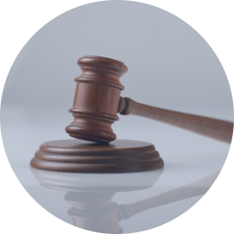

-
Customer FirstWe protect our customers' rights
and make their privacy our top priority. -
Protection of ShareholdersWe protect our shareholders' assets and profits to the best of our ability by improving our financial structure and promoting ethical practice.
-
Shared GrowthWe maintain a fair relationship with our business partners to promote mutual growth and sustainable partnership while preventing unfair practices.
-
Respect for EmployeesWe create an ethical workplace culture based on mutual understanding and trust and respect and prevent sexual harassment.
-
Social ContributionWe establish an ethical corporate culture and build trust by contributing to our society based on compliance, transparency, and fairness.
@@include('../../html/include/component/header.html')
Ethical Management
Promoting transparent
and fair business practices.
and fair business practices.
We are committed to fulfilling our corporate social responsibility as a global leader.
@@include('../../html/include/common/breadcrumb-white.html', {
"depth1": "ESG",
"depth2": "Ethical Management",
})
@@include('_scrollWrap.html')
Dedicated to transparent
and fair operation.
and fair operation.
We will continue to build trust based on the principles of ethical management.
Ethical Management Principles
We recognize our ethical responsibilities toward customers, employees, shareholders, suppliers, government, and local communities,
and ensure full compliance with them in our corporate activities.
We encourage you to report any violations of our ethical management principles through the helpline
If you are aware of any unethical practice of our employees or have suggestions,
please contact our helpline.
Violations
마크로젠 임직원에 의한
고객 권리 침해 행위
고객 권리 침해 행위
불공정 거래, 부당 선정, 관계사 정보
유출 등 관계사 상대 갑질
유출 등 관계사 상대 갑질
협력회사에 대한 부당지분 참여,
겸직 등 기회 유용
겸직 등 기회 유용
공금위반, 금전 기타 이익수수 등
비위 행위
비위 행위
부정 보고, 문서 조작 또는
회사 정보 유출 행위
회사 정보 유출 행위
성희롱, 직원간 차별/강압 행위
기타 법률 위반 행위
-
01 Filing of reportPlease submit a detailed account of potential violations of the ethical management principles. report@mghelpline.com The e-mail account for receiving reports is operated and managed separately from our internal accounts and it can be accessed by security administrators only.
-
02 내용 확인메일로 접수된 내용을 담당자가 확인하며, 제보자 신분을 보호하기 위하여
제한된 극소수의 인원이 관련 내용의 처리를 진행합니다. 제보자 보호에 책임을 다하겠습니다. 마크로젠은 제보자 또는 신고자의 개인정보보호 및 비밀유지를 철저히 하며, 제보 또는 신고로 인한 불이익이 발생하지 않도록 철저히 관리하고
있습니다. -
 03
조사 개시
조사는 제보 접수 순서 및 우선 순위에 따라 진행되며,
03
조사 개시
조사는 제보 접수 순서 및 우선 순위에 따라 진행되며,
조사 대상 및 범위에 따라 기간이 달라질 수 있습니다. -
 04 조사 완료제보 내용에 대한 사실 확인 후 아래와 같이 처리하며,
그 결과를 신속히 알려 드립니다.- 건의 및 요청사항유관부서 협의 후 제안 사항에 관한 처리 결과를 신속히 답변
- 중대 위반사항내부 조사 후 처리 결과를 신속히 답변. 필요에 따라 특별 감사 또는 사법기관 고발 등 후속 조치 시행